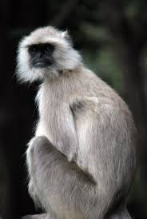

Endangered animals in Sikkim
Gray Langurs also called Hanuman langurs or Hanuman monkeys. They are mammals. They got endangered because of pollution and hunting. They did not get extint because they adapt with many habitats.
Java Rhinoceros is a mammal. They are herbivorethey eat veg food only. They eat up to 50 kg every day. On avarage which is what a avarage man eats up every year. They got endangered because of habitat loss, diseases and poaching.
